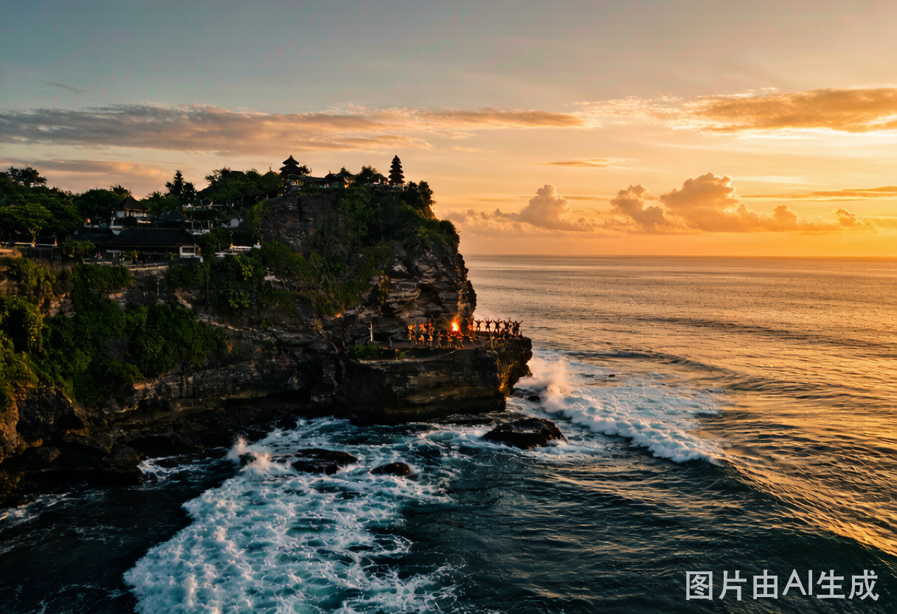
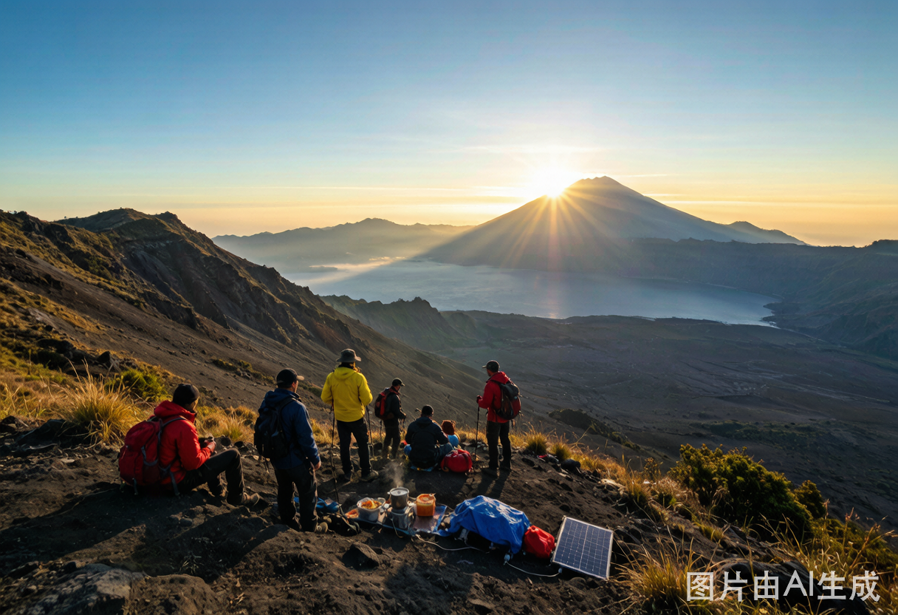
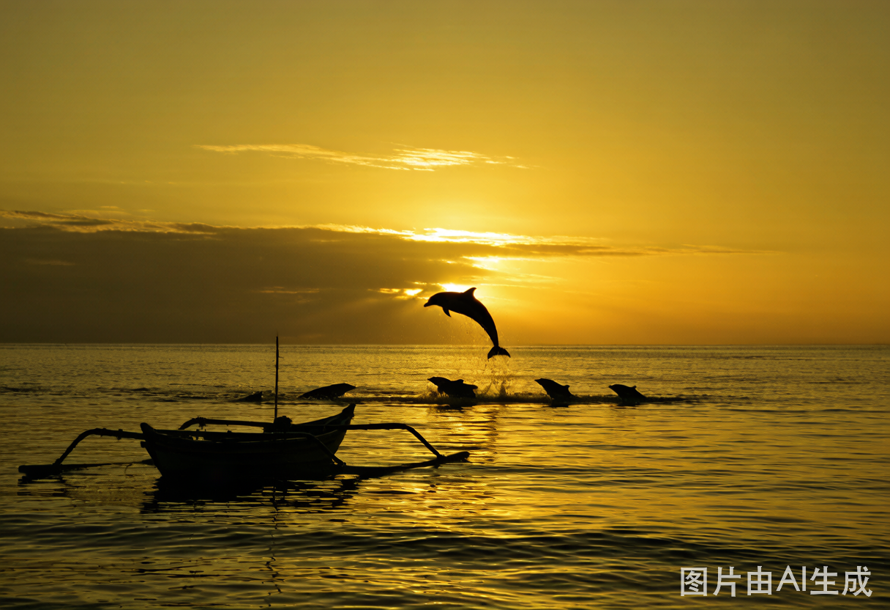
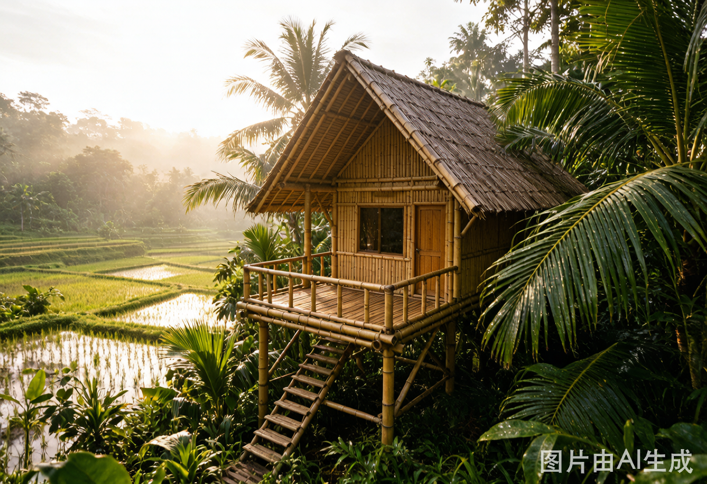
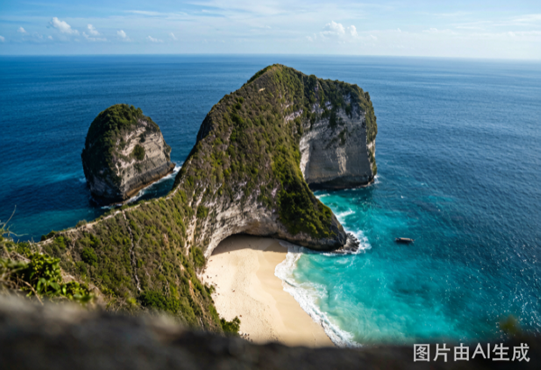
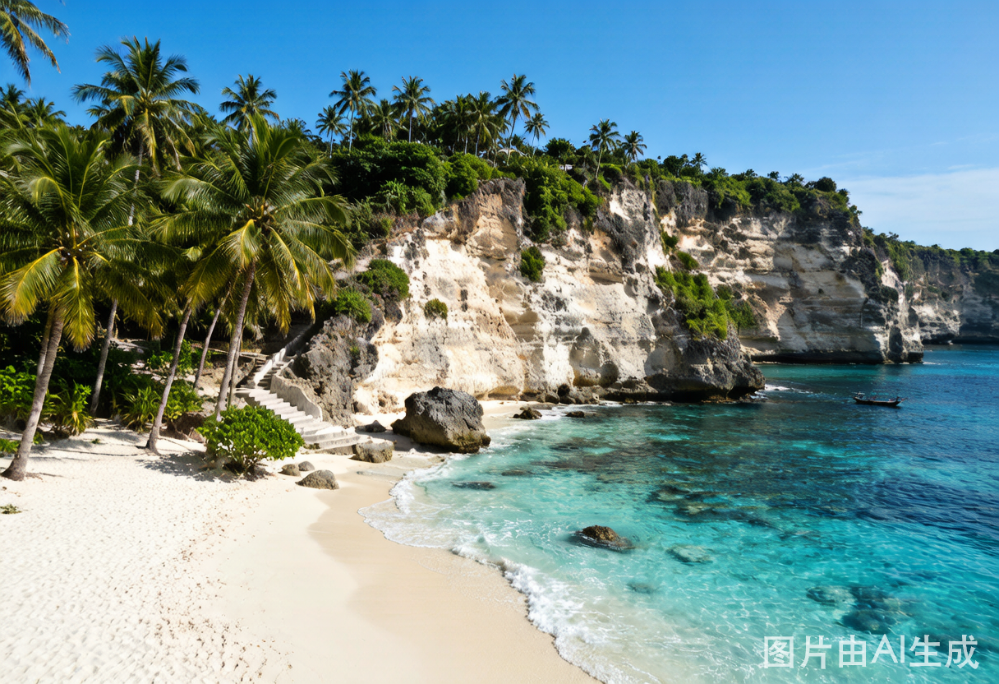
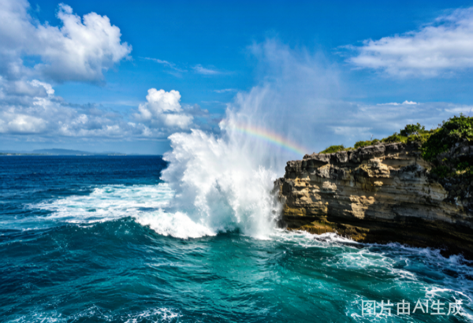

巴厘岛深度之旅
行前准备清单
⏰ 关键时间节点
✈️ 抵达 Ngurah Rai 国际机场（DPS）。入境出示 eVOA 打印件。取行李后机场大厅买 Telkomsel SIM 卡（30GB/30天 ≈ ¥50），ATM 取 IDR 1,000,000 应急。
⚠️ 机场换汇汇率最差，只换 ¥500 应急。大额到 Ubud 换。
Grab/Gojek 前往水明漾酒店，约 40-60 分钟（视交通），费用 IDR 200,000-300,000（¥90-135）。入住后简单休整。
Naughty Nuri's Seminyak — 巴厘岛最著名的猪肋排，Martini 也是一绝。人均 ¥60-80。轻松的第一顿，不用太正式。备选：Seasalt Seminyak 海滩落日海鲜（人均 ¥150+）。
Grab 前往乌鲁瓦图，约 50-60 分钟，费用 IDR 200,000-250,000。
建在 70 米悬崖上的千年海神庙。门票 IDR 50,000/人，入口免费借纱笼。注意：猴子会抢眼镜和帽子！悬崖步道沿途可远眺印度洋。

Single Fin — 乌鲁瓦图悬崖上的老牌 surf bar，印度洋全景。周日有著名 party，周五相对安静。牛肉汉堡+冰 Bintang，人均 ¥60-90。
回到乌鲁瓦图寺看日落 Kecak 火舞——巴厘岛最震撼的文化表演。50 个赤裸上身的男子围坐吟唱"chak-chak-chak"，日落为背景演绎罗摩衍那史诗。门票 IDR 150,000/人，提前 30 分钟排队占好位。
Grab 前往金巴兰海滩海鲜烧烤（约 30min）。沙滩烛光餐桌，现捞现烤的鱼虾蟹。推荐 Menega Cafe，人均 ¥80-150。脚踩沙子吃海鲜，巴厘岛经典收尾。
退房，Grab 前往乌布酒店，约 1-1.5 小时，费用 IDR 250,000-350,000。建议订稻田周边民宿（不临主街），安静且风景好。
Warung Babi Guling Ibu Oka — 乌布烤乳猪饭的祖师爷。一份 Nasi Babi Guling（脆皮猪肉+血肠+蔬菜+辣酱）IDR 55,000（¥25）。不接受预订，排队但值得。
巴厘岛最知名的梯田景观，门票 IDR 25,000/人。必玩 Bali Swing 高空秋千（IDR 150,000-500,000 视套餐），穿飘逸长裙出片率 200%。

Hujan Locale — 主打印尼 fusion，主厨 Will Meyrick 在东南亚餐饮界名气很大。推荐 sharing menu，人均 ¥150-200。备选：Melting Wok Warung（平价东南亚菜，人均 ¥40）。
⚠️ 晚餐后早点休息，明天凌晨 2 点起床。
向导到乌布酒店接人。提前一天通过 Klook/酒店预订 Mount Batur Sunrise Trekking Tour，舒适型 IDR 600,000-800,000/人（¥270-360），含接送+早餐+手电+向导。
约 2 小时登顶（难度中等，非技术路线）。日出约 6:00，向导在山顶准备简单早餐（煮鸡蛋+香蕉三明治+热茶）。俯瞰巴图尔湖，远眺阿贡火山和林贾尼火山。

回到酒店补觉。凌晨 2 点起床必须休息够，不然后面行程撑不住。
午后逛 Ubud Art Market。手工竹编包（¥30-80）、蜡染布、捕梦网。要砍价，按报价 30-40% 还。17:00 左右收摊。
推荐 Karsa Spa（需提前邮件预订），稻田中央的露天按摩房。Balinese Massage 1h IDR 200,000（¥90），性价比之王。备选：Putri Bali Spa。
Warung Garasi — 本地人爱去的印尼家常菜，Nasi Campur 拼盘饭 IDR 35,000（¥16），轻松好吃。
退房，包车向北。通过 Klook 或酒店预订 10h 包车 ¥250-350。沿途三站：
① Gitgit 瀑布（9:30-10:30） — 主瀑 35m，步行 15min 入林，水雾清凉。门票 IDR 20,000。
② Wanagiri Hidden Hills（11:00-12:00） — 网红秋千+鸟巢观景台，俯瞰双子湖 Buyan & Tamblingan。门票 IDR 50,000。
③ Ulun Danu Bratan 水神庙（14:00-15:30） — 建在湖上的印度教寺庙，印在 IDR 50,000 纸币上。巴厘岛最标志性画面。门票 IDR 75,000。
酒店餐厅或 Damai Restaurant（罗威那最好的 fine dining，人均 ¥100-150）。清淡为主，为明早海豚养精蓄锐。
🌅 乘坐传统 Jukung 独木舟出海，日出时分海豚群在船边跃出水面。共享船 IDR 100,000/人（¥45），4-6 人一船。9 月海况好，目击率 90%+。

酒店早餐后退房，包车南返约 2.5h，直接送到树屋。
🌿 经济型树屋推荐：Bali Jungle Huts（¥300-500/晚）或 Bamboo Eagle Eco Lodge（¥400-600/晚）。竹制结构，四周稻田或丛林环绕，露天淋浴。

这是一下午"住"大于"玩"的时光。泳池泡着、书翻着、鸟鸣听着。树屋自带餐厅解决午晚餐（印尼炒饭/炒面 IDR 60,000-100,000）。黄昏丛林散步或酒店瑜伽课。
最后享受树屋氛围。早餐后退房，Grab 回到乌布中心（如树屋在乌布周边）。
Sacred Monkey Forest，门票 IDR 80,000/人。600+ 只长尾猕猴在古庙遗迹间自由活动。眼镜、帽子、水瓶收好，猴子会抢。不要直视它们眼睛（挑衅信号）。
小红书看攻略 ↗Sari Organik — 穿过稻田步行 15 分钟到达，四周稻田环绕的有机餐厅。推荐 Buddha Bowl 和火龙果 smoothie bowl，人均 ¥40-60。本身就是风景。
免费，1-2 小时山脊散步，俯瞰两条河谷交汇。下午 16:00 后光线最好，不晒。
Bridges Bali — 河谷上的浪漫餐厅，主打西餐+印尼 fusion，人均 ¥150-250。备选：Locavore（需提前 2 周订位，人均 ¥400+）。在乌布的最后一晚要吃好。
乌布退房，Grab 到 Sanur 码头（约 45min，IDR 200,000）。提前一天在 12Go.asia 或酒店前台购快船票。
Sanur → Nusa Penida 快船 45min，IDR 150,000-200,000/人（¥68-90）。多家运营商（Angel Billabong、Semabu Hills），最早 7:30 有船。
🦖 Kelingking Beach — 佩尼达头号景点！T-Rex 形状悬崖伸入碧绿海水。可从山顶观景台拍照，也可沿陡峭台阶下到海滩（45min 单程，体力活）。包车 IDR 600,000/天。

Crystal Bay 浮潜/日落。佩尼达最佳浮潜点，有机会看到 Manta Ray（9 月概率高）。租浮潜装备 IDR 50,000/套。
⚠️ 佩尼达路况极差（窄+坑+灰），摩托车新手不要骑。包车安全得多。
Diamond Beach — 沿峭壁上的竹楼梯下到白沙滩，佩尼达最美的海滩没有之一。Atuh Beach 在旁边，双湾海景。早去人少，光线也好。

午饭+返回码头。预计 14:00 快船 Penida → Lembongan（20-30min）。
Devil's Tear — 巨浪冲入凹洞喷出十几米水雾，几乎每次都有彩虹。⚠️ 不要站太近，浪会把人卷下去。Dream Beach 在旁边，蓝梦岛最漂亮的白沙滩，看日落。

Jungutbatu 海滩沿线一排海鲜烧烤餐厅，人均 ¥50-80。烤鱼+冰 Bintang 啤酒，蓝梦岛标配。
包船 IDR 300,000-500,000（¥135-225/船）走 3 个潜点：Manta Bay（魔鬼鱼，9月高概率）、Crystal Bay（珊瑚群+热带鱼）、红树林（清静水域）。自备 GoPro 或租防水壳。
🤿 浮潜装备可在蓝梦岛租，IDR 50,000/套。不会游泳也没关系，船长会给你救生衣+浮条。
退房前最后一顿蓝梦岛午餐，海滩餐厅解决。
快船 Lembongan → Sanur，30min。抵达后 Grab 前往最后一晚酒店。
推荐 Rock Bar（AYANA 度假村内，巴厘岛最著名的悬崖酒吧）或 Sundara Beach Club（Jimbaran，安静私密）。预算：Rock Bar 人均 ¥100-200，Sundara 人均 ¥150-250。
小红书看攻略 ↗Jimbaran 或 Sanur 最后的海鲜大餐。推荐 Sundara 海边套餐或当地海鲜馆。
推荐 2h Balinese Massage ¥150-200/人，为旅行画上完美句号。
早餐、泳池最后泡一次、打包。退房。国际航班建议提前 2.5h 到机场。
Grab 前往 DPS 机场。Sanur → DPS 25min，Jimbaran → DPS 20min。
⚠️ 巴厘岛机场出境排队可能长达 1h，预留充足时间。机场免税店可花掉剩余印尼盾。
✈️ DPS → HKG，巴厘岛之旅结束。下次见。
| 项目 | 经济型 ¥ | 舒适型 ¥ | 豪华型 ¥ |
|---|---|---|---|
| ✈️ 国际往返（2人） | 2,800 | 3,600 | 4,800 |
| 🏨 住宿 10 晚 | 2,500 | 5,500 | 12,000 |
| 🍜 餐饮 11 天 | 2,200 | 4,000 | 8,000 |
| 🚗 交通（包车+Grab+船） | 1,500 | 2,500 | 3,500 |
| 🎫 活动（徒步+海豚+浮潜+门票+Spa） | 1,800 | 2,800 | 4,500 |
| 📱 SIM + 杂费 | 200 | 300 | 500 |
| 总计 | 11,000 | 18,700 | 33,300 |
* 经济型：青旅/民宿+本地餐厅+摩托；舒适型：精品酒店+混合用餐+包车；豪华型：五星/树屋度假村+fine dining+私人向导
📱 App 必备
Gojek + Grab：打车+外卖+按摩上门。南部&乌布覆盖好，佩尼达/罗威那几乎叫不到车。
Google Maps：提前下载巴厘岛离线地图（佩尼达信号差）。
12Go.asia：快船票线上预订。
💵 换汇建议
机场只换 ¥500 应急（汇率最差）。
Ubud 或 Seminyak 正规换汇点（BMC / Central Kuta Money Exchange）汇率最好。
大额消费刷 Visa/Mastercard（不收银联的地方多）。ATM 用 BCA/BNI 取现稳妥。
👕 天气穿衣
9 月底干季尾巴，27-31°C，湿度 60-75%。
白天轻薄透气，早晚+火山穿薄外套。
偶有短暂阵雨（3-6 天/月），不影响行程。
紫外线极端，SPF50+ 必备。
🚤 跳岛船班
Sanur→Penida：7:30–17:00 每小时一班，45min。
Penida→Lembongan：每天 4-5 班，20-30min。
Lembongan→Sanur：8:00–16:00 多班次，30min。
提前一天买票即可，旺季建议线上先订。
⚠️ 安全注意
佩尼达路况极差，摩托新手不要骑。
恶魔的眼泪不要站崖边，浪能卷人。
猴子抢眼镜/帽子/水瓶，圣猴森林收好。
饮用瓶装水，不要喝自来水。
巴厘岛肚子（Bali Belly）最常见，带肠胃药。
⛈️ 雨天备选方案
如遇暴雨跳岛船班取消：提前一天返本岛。
乌布替代行程：Tegenungan 瀑布、Setia Darma 面具博物馆、银饰工坊体验、Yoga Barn 瑜伽课。
南部替代：Beach club 躺一天（Finns / Potato Head）。
🆘 紧急电话
报警：110
急救/救护车：118
旅游警察：+62 361 754599
🇨🇳 中国领馆
中国驻登巴萨总领馆
+62 361 239902
领事保护热线：+86 10 12308